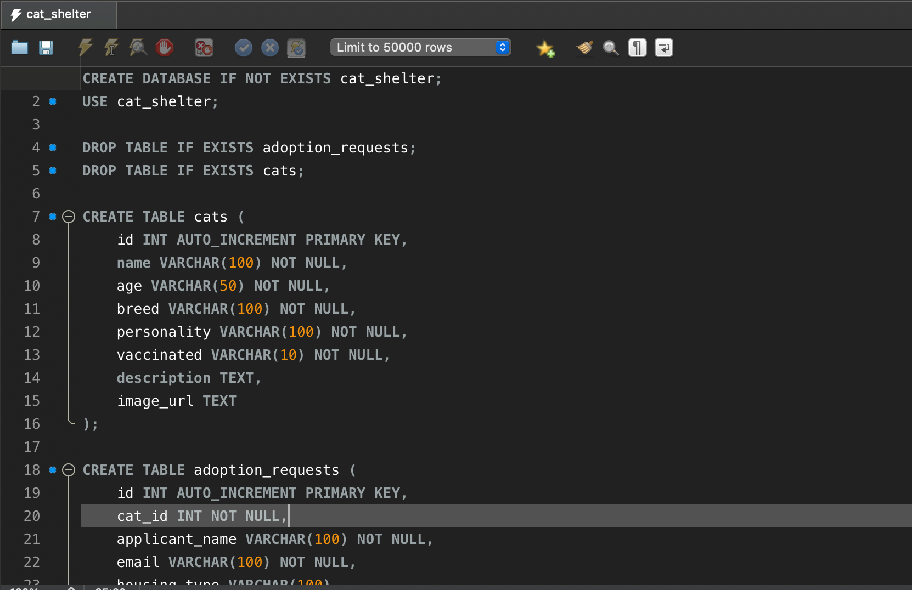
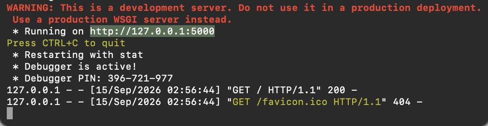
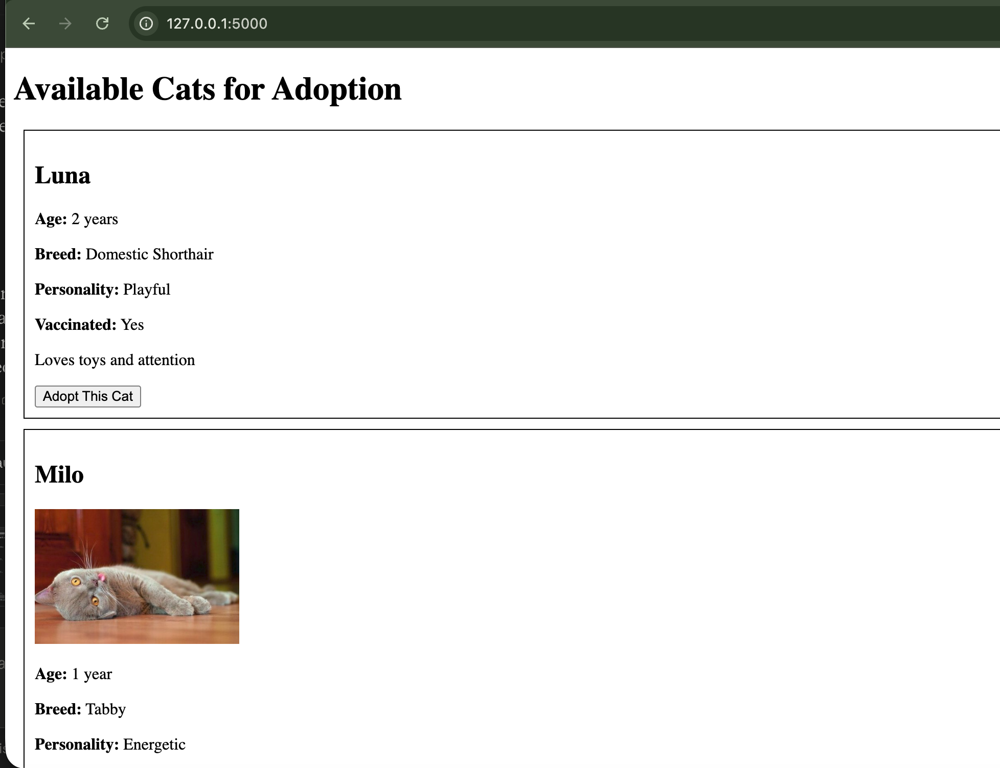
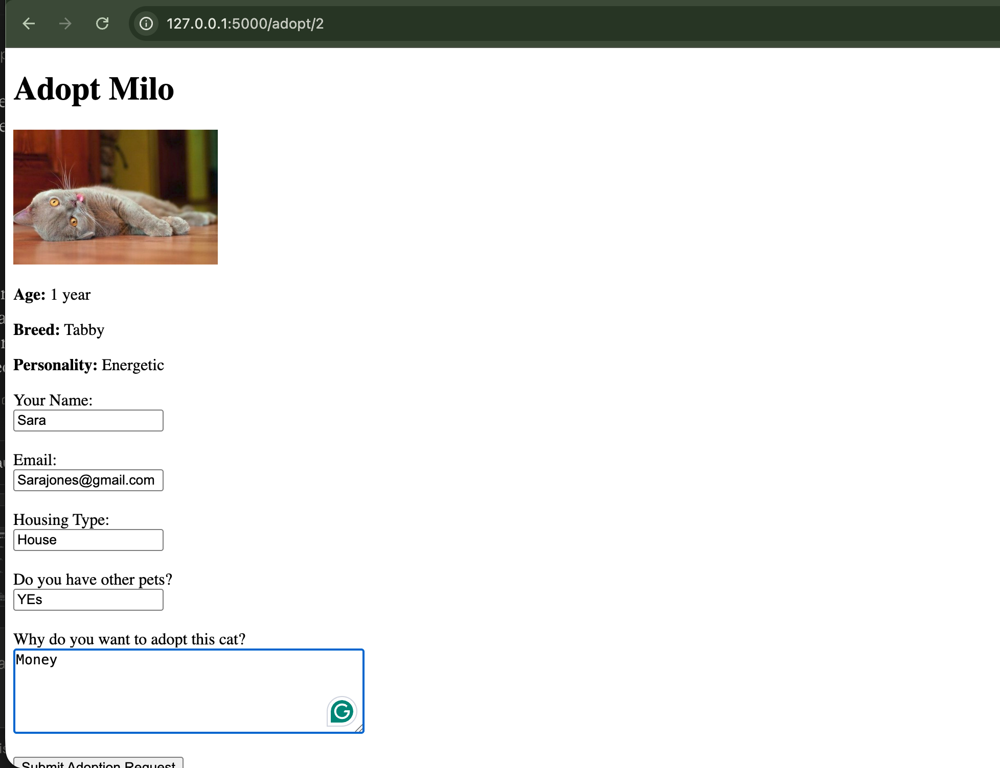
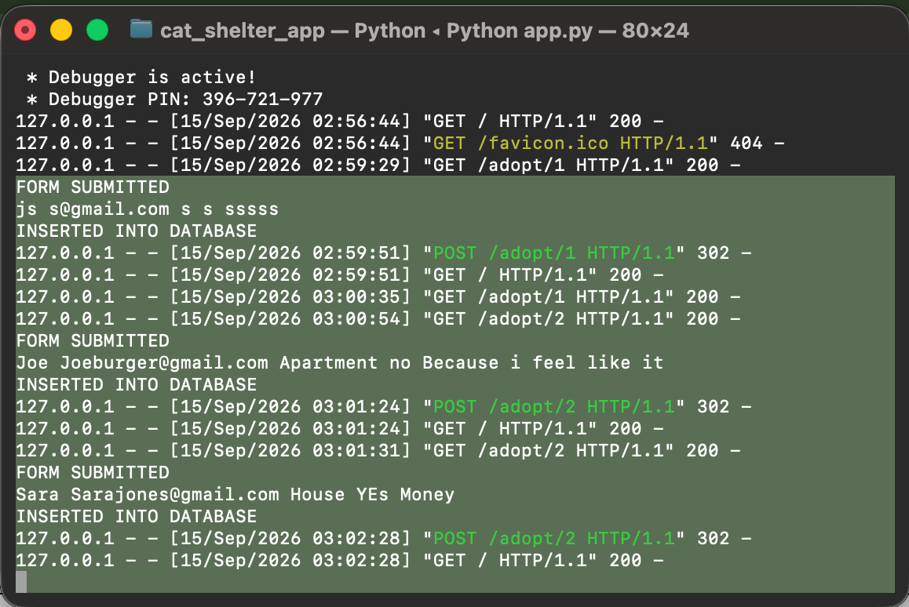
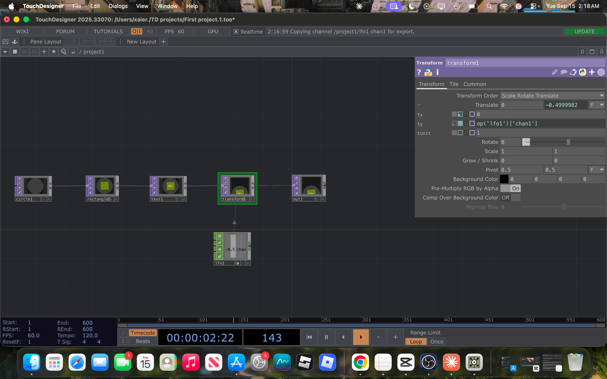

01
Projects
Cat Shelter App





A full-stack web application designed to manage cat listings and adoption requests. Built a Flask backend connected to a MySQL database to store and retrieve real application data.
- Built REST-style backend functionality with Flask
- Designed relational database tables for cats and adoption requests
- Implemented forms for submitting adoption requests
stack
Python
Flask
MySQL

Created a real-time interactive visualization using TouchDesigner to explore motion, animation, parameter control, and node-based programming.
- Built animated motion using LFOs
- Used nodes to control object movement
- Explored real-time visual programming outside traditional code
stack
TouchDesigner
Student Gradebook System


Application for managing student records and grades, including grade updates, organization by student, and automatic average calculations.
stack
Java
Object-Oriented Programming
Data Management